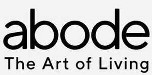

Trade Mark Journal No.2025/010 7 March 2025
UK00004163088 20 February 2025 (3,4,6,8,11,14,16,18,19,20,21,22,24,25,26,27,28,31)

- Class 3
- Reed diffusers; room fragrances; fragrances; air fragrancing preparations; fragrance for household purposes.
- Class 4
- Candles and wicks for lighting.
- Class 6
- Common metals and their alloys, ores; works of art and decorations, including sculptures, made primarily of non-precious metals; metal materials for building and construction; transportable buildings of metal; non-electric cables and wires of common metal; small items of metal hardware; metal containers for storage or transport; safes; general purpose metal storage units; general purpose metal storage containers and bins; metal storage boxes for general use.
- Class 8
- Spoons; knives.
- Class 11
- Apparatus and installations for lighting, heating, cooling, steam generating, cooking, drying, ventilating, water supply and sanitary purposes; garden lighting; garden lights; garden fountains; garden water features; heating apparatus and appliances; heaters; fire pits.
- Class 14
- Precious metals and their alloys; works of art and decorations, including sculptures, made primarily of precious or semi-precious metals or stones, or their imitations, or coated thereof; ornaments, made of or coated with precious or semi-precious metals or stones, or imitations thereof; statues and figurines, made of or coated with precious or semi-precious metals or stones, or imitations thereof; jewellery; clocks; wall clocks.
- Class 16
- Boxes, cartons, storage containers and packaging containers made of paper or cardboard; non-metal photo storage boxes; photo storage boxes of metal; photo storage boxes; works of art made of paper; framed art pictures.
- Class 18
- Parasols.
- Class 19
- Materials, not of metal, for building and construction; rigid pipes, not of metal, for building; asphalt, pitch, tar and bitumen; transportable buildings, not of metal; monuments, not of metal; monuments, not of metal; natural and artificial stones; works of art and decorations, including sculptures, made primarily of non-metallic mineral materials such as stone, bitumen or concrete, or substitutes thereof; statues and statuettes of stone, concrete or marble; wooden screen walls; wood panelling; posts; basins (pools); arbors; pergolas (non-metallic -); gazebos; gazebos not primarily of metal; garden sheds of non-metallic materials; greenhouses; greenhouse frameworks; greenhouses having non-metallic frames; garden shelters; sheds; sandboxes (for building); reeds for building, non-metal latticework; fences; bird baths (not of metal); paving; slabs, not of metal; non-metal gates and fencing; non-metal gates and fencing panels; conservatories (non-metallic); garden ornaments being non-metallic building structures; pre-fabricated greenhouses (non-metallic); decking; balustrades; lawn edging (non-metallic); lawn edging strips (non-metallic); trellises, not of metal; trellis (non-metallic -) for supporting plants; stone lanterns [garden ornaments of stone]; parts and fittings for all the aforesaid goods.
- Class 20
- Beds, mattresses, pillows, and cushions; indoor and outdoor cushions; furniture; indoor and outdoor furniture; mirrors, picture frames; containers, not of metal, for storage or transport; unworked or semi-worked bone, horn, whalebone or mother-of-pearl; shells; meerschaum; yellow amber; works of art and decorations, including sculptures, made primarily of wood, straw, bone, shell, wax, resin, plastic or plaster, or substitutes thereof; shelves; storage shelves; storage cabinets; storage units; storage containers; boxes, not of metal; wooden storage boxes and containers, stackable; storage boxes; baskets for storage; hanging storage racks; organizational products, namely, storage racks, metal, and non-metal storage racks, expandable storage racks, shoe racks, non-metal hanging closet organizers for shoes, clothes hangers, garment storage racks; organizational products for household goods, namely, storage racks and shelves for brooms, brushes, mops, dusters, dustpans, buckets, tools, stands, stools, chairs, utensils, cooking utensils, eating utensils, cords, wires, electronics, lights, and lamps; drawer organizers; storage and organization systems comprising shelves, drawers, cupboards, baskets and clothes rods, sold as a unit; furniture with built-in storage; garden furniture; patio furniture; decorative items of wood; statuettes; flower stands, flower pot pedestals; statues or statuettes of wood, wax, plaster or plastic; pedestals; furniture coasters and stands; comb foundations for beehives; garden stands; balcony planters; mobiles (decorative items); tables; chairs; deck chairs; stools; frames for chairs; hanging basket liners (plastic); hanging baskets (flower) of non-metallic materials; stakes for plants; stakes for trees; tubs made of plastics for containing plants; tubs made of wood for containing plants; compost bins of non-metallic materials; metal plant pot stands; beanbag chair; parts and fittings for all the aforesaid goods.
- Class 21
- Unworked or semi-worked glass, except glass used in building; glassware, porcelain and earthenware not included in other classes; works of art and decorations, including sculptures, made primarily of ceramics or glass, or substitutes thereof; food storage containers; plastic storage containers for household and domestic use; collapsible storage containers for household and domestic use; coasters (not of paper or linen); serveware, dinnerware, tableware, glasses, mugs, water jugs; fork; cooking pans; cups, saucers, mugs, bowls, salad bowls, cake stands, platters, serving dishes, butter dishes, insulating sleeve holder for beverage cups; insulated containers for food or beverage for domestic use; thermal insulated containers for food or beverages.
- Class 22
- Ropes and string; nets; tents and tarpaulins; awnings of textile or synthetic materials; sails; sacks for the transport and storage of materials in bulk; padding, cushioning and stuffing materials, except of paper, cardboard, rubber or plastics; raw fibrous textile materials and substitutes therefor; cloth bags for storage of garments, shoes, and personal items; multi-purpose cloth bags for storage; fabric and polyester mesh net used for storing household items.
- Class 24
- Household linen; bath linens, namely face towels, hand towels, body towels, and face cloths; bedspreads; bed linen and blankets; duvets and duvet covers; quilts and quilt covers; pillows, pillow cases, and pillow covers; throws; mattress covers; wall hangings of textile featuring mural art; table linen; textiles; textile for furniture; picnic blankets.
- Class 25
- Loungewear, nightwear, robes, slippers, and sleep masks.
- Class 26
- Artificial plants; artificial flowers.
- Class 27
- Carpets, rugs, and mats; wall hangings, not of textile, featuring mural art.
- Class 28
- Christmas decorations; beanbags.
- Class 31
- Dried flowers.
QVC, Inc.
Representative: Potter Clarkson LLP